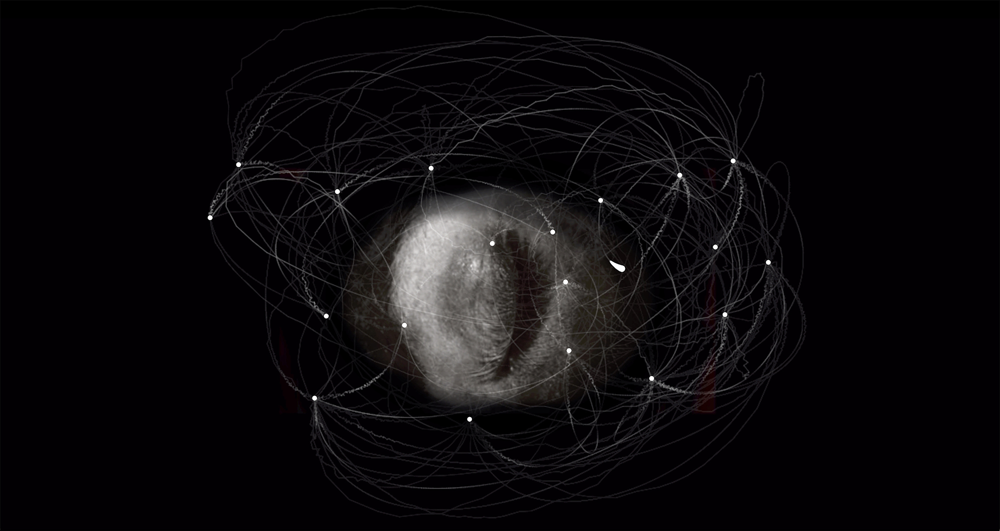

2018 - pieza de net-art, co-creada con Ariel Uzal

Principia, limbo gravitacional explora lo inevitable, los patrones reiterativos, la recaída constante, el paradójico movimiento hacia el nuevo fracaso.
Es una forma de interrogar nuestras conductas e identidades desde nuestra memoria: un pasado, siempre en presente, que configura nuestro porvenir. Cada clip de video está anclado en recuerdos y sensaciones personales que configuran zonas gravitacionales de difícil (o imposible) escape. La pieza articula un recorrido laberíntico e inacabable no sólo a través de sus contenidos audiovisuales, que construyen una narrativa agobiante, sino también mediante su forma de enunciación: un funcionamiento en continua inercia que sumerge al espectador aún más en la lógica del sin salida, de la repetición perpetua.
Exhibiciones
▪ Selección Festival Proyector plataforma de videoarte, 2021, Sala Equis, Madrid, España
▪ FONLAD Festival Internacional de Videoarte y Performance, 2021
▪ Selección Festival Loops Expanded 2020
▪ Distrito 1, 2018, Trelew, Argentina
▪ Selección Festival Internacional de Videoarte 2018, Proyección Otra Mirada, Centro Cultural San Martín, Buenos Aires, Argentina.
2018 - audiovisual net.art piece co-created with Ariel Uzal
Principia, gravitational limbo explores the inevitable, the reiterative patterns, the constant relapse, the paradoxical movement towards a new failure.
It is a way for us to interrogate our conducts and identities from the standpoint of our memory: a past, always present, that configures our future. Each video clip is based on personal memories and sensations that create gravitational zones of extremely difficult (or impossible) escape. the experience weaves a labyrinthic and endless trail not only through its audiovisual contents, that build an oppressive narrative, but also in its discursive form: a motion of continual inertia that submerges the spectator even more so in the feeling of no escape, of perpetual repetition.
Exhibitions
▪ Official selection Proyector, video art festival, 2021, Sala Equis, Madrid, Spain
▪ FONLAD International Festival of Video art and Performance, 2021
▪ Distrito 1 Group show, 2018, Trelew, Argentina
▪ International Festival of Video art (FIVA), category Otra Mirada, Centro Cultural San Martín, Buenos Aires, Argentina